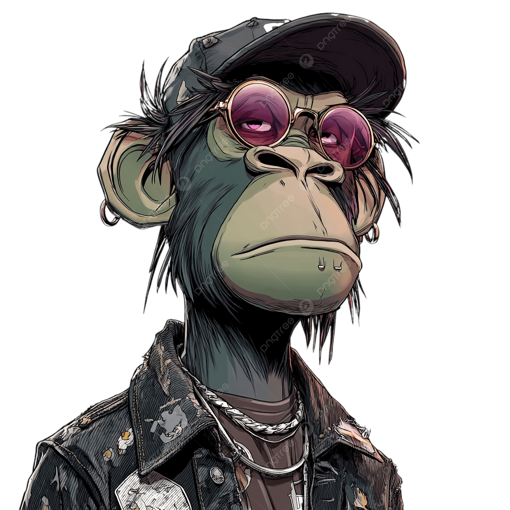

Análisis de Sistemas
Mi carrera y el punto de partida de mi formación en tecnología y desarrollo de sistemas.
Tengo 20 años y estoy dando mis primeros pasos en el mundo del software. Este es mi espacio para compartir mi formación y los proyectos que voy desarrollando durante la carrera.

Mi carrera y el punto de partida de mi formación en tecnología y desarrollo de sistemas.
Materia en la que estoy realizando este trabajo de creación y publicación de una página personal.
Este proyecto reúne una página web, un repositorio en GitHub y su publicación mediante Vercel.
Un espacio para presentarme y compartir mi formación. Creado para la actividad de uso de plataforma como servicio de Ingeniería del Software.
Conocer mi formaciónPróximamente voy a compartir aquí mis enlaces de contacto y mis nuevos proyectos.
Volver al inicio ↑